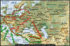
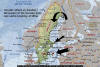

WW-III: Russian Invasion of Europe
|

The
Russian & Arab |
 Pix-1 | Pix-2 | Pix-3 | Pix-4 Russian attack on Sweden |
Nostradamus frequently talks about an Arab invasion of Europe. A question naturally arises as to how the Arabs, given their present state of military strength, single-handedly take on the combined might of Europe and USA and manage to invade and conquer Europe. Many other prophecies speak of a Russian invasion of Europe at this time. Could it be possible that an Russian-Arab alliance will attack Europe during the Third World War? If so, where has Nostradamus referred to such a happening? Surely, Russia has not been mentioned by name anywhere in the Centuries. In that case, there must be some oblique indications in these prophecies of a Russian involvement in WW-III.
The following is an analysis of various prophecies by Nostradamus and others to find out the nature and extent of Russian involvement in WW-III.
The Easterner will leave his seat, to pass the Apennine mountains to see Gaul: He will transpierce the sky, the waters and the snow, and everyone will be struck with his rod. ~ Nostradamus II.29
From beyond the Black Sea and great Tartary, there will be a King who will come to see Gaul. He will pierce through "Alania" and Armenia, and within Byzantium will he leave his bloody rod. ~ Nostradamus V.29
... Then the great Empire of the Antichrist will begin where once was Attila's empire and the new Xerxes will descend with great and countless numbers, so that the coming of the Holy Ghost, proceeding from the 48th degree, will make a transmigration, chasing out the abomination of the Christian Church, and whose reign will be for a time and to the end of time. ~ Nostradamus, Epistle to Henry II.
The first two quatrains and the paragraph from the Epistle are closely linked and appear to speak of the same person and places. Combining the three, we figure out that the "Easterner" King - The Antichrist, will be coming from a place which is beyond the Black Sea and Tartary. He will fight through Alania, Armenia and Byzantium and travel by air, sea and cross the mountains on his way to France. His empire will be in the place where there was the empire of Attila, the Hun. Let us now look closely at the various geographical clues about the persons and places mentioned above -
Tartary - name applied
during the Middle Ages to the central part of Eurasia from the Dnepr River in
the west to the Sea of Japan (East Sea) in the east. In later times a
distinction was made between European and Asian Tartary; the part of Russia that
was once the khanate of the Crimea was called European Tartary. The term Asian
Tartary, first applied to the whole of Central Asia, was gradually confined to
the region called Turkistan.
Beyond Black Sea - lies Russia itself and the ex-Soviet republics of
Georgia, Armenia, Russia, Azerbaijan, Kazakhstan, Uzbekistan, Turkmenistan etc.
Armenia - lies on the south east corner of the Black Sea.
Alania - Alaniya or North
Ossetia, a Russian state just North East of Black Sea and west of Chechnya.
Alans were a race of Iranian speaking Nomads.
Attila's Empire - Hunnish Empire, which ranged from the Rhine on the west
to the Ural River on the east, and as far north as the Baltic Sea. The Danube
formed the Empire's southern border.
Xerxes - Xerxes I (c. 519-465 BC), was the King of Persia (486-465 BC).
Since the king will pierce through Alania and Armenia, he will come from further North or North East. He will move through the East of Black Sea and west of Caspian Sea and then come to Byzantium or Turkey, which borders Armenia and is on the south of the Black Sea. From Turkey he will move on to Italy after crossing the Mediterranean Sea and then cross the Apennine Mountains (snow) and finally go to France. From the geographical indications provided, we can reasonably conclude that the "King" mentioned here is the leader of Russia and the prophecies speak of a invasion of Europe by Russia. At the same time, it indicates that the Russian leader will be one of the Antichrists, although it is too early at this stage to speculate whether the Russian leader is Vladimir Putin.
Anton Johansson of Sweden,
(1858 - 1909), who, among other things is famous for the prediction of the
sinking of Titanic had also prophesized a Russian invasion of Europe -
- Persia and Turkey will be conquered apparently by
Russian troops.
- The Russians will conquer the Balkans.
- There will be great destruction in Italy.
- The "red storm" will approach France through Hungary, Austria, northern
Italy and Switzerland. France will be conquered from inside and outside.
- American supply depots will fall into Russian hands.
- Germany will be attacked from the east.
- Russia will lead a mass attack against the United States, so U.S. forces
will be prevented from reinforcing Europe.
Johansson indicated a different route for the
conquest of France by Russia i.e. Hungary - Austria - Northern Italy -
Switzerland, although he mentions that Russia will conquer Persia and Turkey in
the south and the Scandinavian countries including Sweden in the north. Perhaps,
the Russian army takes all these routes. The route through Georgia, Armenia,
Iran, Turkey is perhaps significant in order to cut off Turkey, which is a NATO
ally, from helping Europe, thereby establishing control over the Mediterranean
Sea, which will open another front against Southern Europe. Another reason will
perhaps be to help the Arab forces, who by now will probably have conquered
Egypt and have started fighting Iran - a Shia'ite Islamic country which has
never seen eye to eye with the Sunni Arabs. It is possible that Russia agreed to
help the Arab alliance against Iran in return for its help in defeating Turkey.
In this context, the following three prophecies will clarify the situation -
The Arab Prince Mars, Sun, Venus, Leo, the rule of the Church will succumb by
sea: Towards Persia very nearly a million men, The true serpent will invade
Byzantium and Egypt. ~
Nostradamus, V.25
Nafi' ibn 'Utbah said :
"The Prophet (S) said, 'You will attack Arabia, and Allah will enable you to
conquer it. Then you will attack Persia, and Allah will enable you to conquer
it. Then you will attack Rome, and Allah will enable you to conquer it. Then you
will attack the Dajjal, and Allah will enable you to conquer him.'"
(Islamic Prophecies : Hadeeth : Muslim)
Imam
Ahmad narrated that Abdullah bin 'Amr bin Al-Aas said, "While we were around the
Messenger of Allah) writing (the Hadith) the Messenger of Allah sallallaahu `alayhi
wa sallam was asked 'Which of these two cities will be conquered first,
Constantinople or Romiyah (Rome)?' He said, 'The city of Heraclius will first be
conquered.' He meant Constantinople.''
(Islamic Prophecies :
Al-Hakim, Al-Mustadrak, vol. 4, p. 508.)
|
Russian attack on Sweden and Norway - Being a Swedish, Johansson also made elaborate predictions of the Russian attack on the Scandinavian countries including Sweden during the Third World War. He says that the Swedish governments of the time before the war would reduce the military strength and defense preparedness of the country. During the war, Russia would launch attack on the city of Göteborg from air with bombs. Over the whole western coast of Sweden from the city of Helsingborg to Malmö will be covered by smoke, presumably from bombing raids. Similarly, other cities of the area will be attacked. Stockholm will also be targeted by bombers, although it will be more successful in defending itself than Göteborg. Russians will enter into Sweden by land through Tornio and by sea from the Kvarken islands (Aland Islands, Finland). Due to the stiff resistance and bravery shown by the Swedish army around here as well as those fighting north of Stockholm, the Russians will suffer tremendous losses. However, the Russian troops will continue to pour in and ultimately, Russians will conquer the whole of the North Sweden. Johansson mentions that Gävle, a port-city in eastern Sweden will be particularly heavily afflicted and plundered by the Russians. Russians will make a landing in the South-Eastern port city of Västervik. After that, they would proceed to capture the Småland highlands of southern Sweden. By this time, they would have already captured the island of Gotland. In Norway, the Russians will enter through the north-eastern part of the Finnmark province of Norway. The first confrontation between the two armies would be between Valljok and Poschd where the front would be 20 Km long and the battle would be extremely bloody. The Swedish and the Norwegian army would fight shoulder to shoulder at Southern Norway and in Olso. The whole of the Norwegian coast from the southern tip to Trondheim in the North will be subjected to air-raids by the Russian air force. Drammen, Stavanger and Oslo will be attacked. Kristiansund would resemble a heap of rubble. The defeat of Sweden will also seal the defeat of Norway. A minister Birker Claesson from Örebro in southern Sweden had a vision in 1950 and saw air raids taking place in five places - Umeaa, Göteborg, Malmö, Stockholm and Västervik. Örebro resembled a heap of rubble. A voice told him that places like Avesta, Tagersta and Sandviken were completely destroyed and many other places were also destroyed to a large extent. |
There is also an indication that a "New King" will be installed in Iran after it is conquered by Russian-Arab forces, who, in turn, will help them in defeating Turkey and further attacking Europe. The "New Xerxes" mentioned by Nostradamus in his Epistle to Henry II and quoted earlier, is this new king. Another quatrain mentions this "New King" -
The chief of Scotland, with six of Germany, captive of the Eastern seamen: They will pass Gibraltar and Spain, present in Persia for the new dreadful King. ~ Nostradamus, III.78
The "Eastern Seamen" could be Russians or Arabs, but undoubtedly, the Scot and the Germans are a big catch for the eastern alliance. The actual attack of Turkey is described in the following quatrain -
Divided by the two heads and three arms, the great city will be vexed by waters: Some great ones among them led astray in exile, Byzantium hard pressed by the head of Persia ~ Nostradamus, V.48
With fire and weapons, not far from the Black sea, he will come from Persia to occupy Trebizond. Pharos and Mytilelne tremble, the Sun is bright, the Adriatic sea covered by Arab blood. ~ Nostradamus V.27
Trebizond or Trabzon is a city in North-East Turkey on the Black Sea. It also seems that Egypt and Greek is also under attack from Turkey. Pharos is an island in Egypt off the city of Alexandria and Mytilene is an island belonging to Greece in the Aegean Sea. After attacking and conquering Greece, the focus is Italy and Greece is used as a launching pad for such attacks -
From the land of Attica, source of all wisdom which at the present is the rose of the world : the Pontiff ruined, its great pre-eminence will be subjected and wrecked beneath the waves ~ Nostradamus V.31
Attica is a peninsula in Greek jutting out in the Aegean Sea. It is indicated that attacks will be made against the Vatican / Italy from there by the way of sea.
Attack will also come in the way of land from Eastern Europe, as it should be. The following quatrain speaks of a land attack by the "Duke of Armenia", which in all probability indicates the Russian leader -
He will
transfer into great Germany Brabant and Flanders, Ghent, Bruges and Boulogne:
The truce feigned, the great Duke of Armenia will assail Vienna and Cologne
~ Nostradamus V.94
The Russian blitzkrieg will occupy various
parts of Belgium, Germany and France when, if fact, some kind of talks will be
going on.
Interestingly, Islamic texts also speak of two "Christian" factions fighting one another over Turkey and one faction is helped by the Arabs in that war. The prophecies relating to the appearance of a great Arab leader named Sufyaani, whose appearance and reign will precede the appearance of al Mahdi and Jesus, the Son of Mary has been discussed in various Hadiths.
Prior to the appearance of Allah's khalifah - the Mahdi, a person will be born from the progeny of Abu-Sufyaan. According to sayyid birzanji rah, this person will be from the progeny of Khalid ibn Yazid ibn Abi-Sufyaan, and according to Imaam Qurtubi rah, his name will be Urwah. The sufyaani will murder the saadaat [progeny of say-yedina Hassan and Hussein (r.a) and will rule over Egypt and Shaam - (Jordan, Palestine, Lebanon and Syria).
By the murder of the saadaat (the progeny of Hassan and Hussein) by the sufyaani, a war against Iran (Shias) by the Arabs (Sunni) has been indicated. There is also a historical basis for such an animosity. Hussein was the grandson of Prophet Muhammad and counted as the second Imam of Shias. His fame rests chiefly on his pre-eminence as the Prophet's last surviving grandson and his rebellion against the Umayyad caliph Yazid, which ended in martyrdom at Karbala. The Umayyad caliphate descended from Muwaiya, who belonged to the Sufyanid (descendents of Abu Sufyan) branch of the Umayyad family. Mainstream Shiites believe Hussein designated his son, Ali Zain al-Abidin, to be his successor, and thus Imam, shortly before being martyred. Muawiya is portrayed as having cheated Ali ibn Abi Talib, the son-in-law of the prophet Muhammad, of the caliphate, and Muawiya's son and successor Yazid is given ultimate responsibility for the killing of Ali's son Hussein at Karbala’ in Iraq in 680.
During the days of the sufyaani, the Byzantine ruler will be at war with one Christian faction and will make peace with the other (Christian faction). Thus the warring Christian faction will run over Qustuntuniyyah (Constantinople or Istanbul), and will occupy it. The Byzantine ruler will flee and go to Shaam. The Muslim army with the aid of the friendly Christian party will wage war against the enemy Christian party, and will be victorious.
A person from the friendly Christian party will thus announce that "because of the cross, victory was gained", and in the name of the cross we won. On hearing this, a person from the Muslim army will assault this Christian person and will say no "Islam was victorious and because of Islam victory was gained". As a result of this incident, war will break out between the Muslims and the friendly Christian party. The Muslim leader will be martyred and the Christians will take over Shaam. Thereafter, the two Christian parties will make peace, and the remaining Muslims will migrate to Madinah. The Christian rule will extend almost up to khaiber, which is to the north of Madinah. Now the Muslims will begin their search for Allah's khalifah - the Mahdi.
The first paragraph indicates the war of the friendly Christian party (Russians) against Byzantine (Turkey) and the war against the enemy Christian Party (Western alliance) by the Arab-Russian combine. The second paragraph refers to the later stage of the war, when other prophecies indicate that there will be a sudden change (of leadership?) in Russia, which will lead to the formation of the Russian-Western alliance and the tables will be turned on the Russia's former allies - the Arabs and possibly the Chinese. This is also indicated by Nostradamus-
When
those of the Northern Pole are united together in the East will be great fear
and dread. A new man elected, supported by the great one who trembles, both
Rhodes and Byzantium will be stained with Arab blood
~ Nostradamus, VI.21
One day the two great leaders will be friends; their great power will be seen to grow. The new land will be at the height of its power, to the man of blood the number is reported ~ Nostradamus, II,89
The Slav people, through fortune in war, will become elevated to a high degree. They will change their Prince, one born a provincial; an army raised in the mountains to cross over the sea ~ Nostradamus, V.26
Two great armies - those of the Russian and the Arabs will assemble thrice in Iran (Media), Arabia (Arabian Peninsula) and Armenia against the opposing forces. The battles for the control of Iran and Turkey will be fought here. The battle in Arabian peninsula will probably be fought against the western alliance, where the later will be defeated. One battle in particular will be fought in the land of "Soliman" (maybe Suleiman - probably the leader of the Arab empire or of Turkey) by the river Araxes or Aras, bordering Turkey and Armenia and Armenia and Iran -
On the fields of Media, of Arabia and of Armenia, two great armies will assemble thrice: The host near the bank of the Araxes, they will fall in the land of the great Suleiman ~ Nostradamus, III.31
There are certain prophecies which say that the Russian invasion of Europe will begin after a trouble in the Balkans following the assassination of a leader (or probably three leaders) in the Balkan region of Serbia, Hungary etc. The assassination of Serbian Prime Minister Zoran Djindjic is probably one of the first of the said three assassinations. The following prophecies all speak of a massive invasion of Europe and attack on the USA by Russia. Most of the prophecies are of a fairly recent origin, and are not in any cryptic form. Thus they do not leave much for interpretations. Together, these will help us to form a complete picture of the nature of the Russian invasion during the Third World War.
The Third World War will begin a few days after the murder of a leader in the sector of Yugoslavia-Hungary ~ A Sister of Queen Brigite Order, Rome (published in 1970).
Prophecies of Alois Irlamier, the German
seer (interviewed in the 1950s)
Everything calls peace. Schalom! Then it will occur -- a new Middle East war
suddenly flares up, big naval forces are facing hostility in the Mediterranean
-- the situation is strained. But the actual firing spark is set on fire in the
Balkans: I see a 'large one' falling, a bloody dagger lies beside him -- then
impact is on impact.
Two men kill a third high-ranked. They were paid by other people. One of the
murderers is a small black man, the other a little bit taller, with bright-coloured
hair. I think it will be at the Balkans, but I cannot say it exactly.
After the murder of the third it starts overnight. I see quite clearly three
numbers, two eights and a nine. But I cannot say what it means and cannot state
a time. The war begins at sunrise. He comes along very rapidly. The farmers sit
in the pub playing cards, when the foreign soldiers look through the windows and
doors. Quite black an army comes from the east, but however everything occurs
very rapidly. I see a three, but I do not know if it means three days or three
weeks.
Massed units march from the East into Belgrade and move forward into Italy.
Thereafter three armored wedges immediately advance with lightning speed in the
north of the Danube over West Germany towards the Rhine - without preliminary
warning. This will occur so unexpectedly that the population flees full of panic
to the west. Many cars clog the roads - if they had stayed at home or would have
not used the main streets. Everything, which will be an obstacle for the rapidly
advancing tanks on high-speed motorways and other fast motorways, will be
down-rolled. I cannot see the Danube bridges above Regensburg anymore. Hardly
anything remains of the big city Frankfurt. The Rhine Valley will be devastated,
mainly by air.
I see three spearheads coming. The Russian does not stop anywhere, while running
in his three wedges. Day and night they run in order to reach the Ruhr-district,
where the many furnaces and fireplaces are. Day and night the Russians run,
inexorably their target is the Ruhr-district.
Immediately the revenge comes from across the large water. However the yellow
dragon invades in Alaska and Canada at the same time. But he comes not far.
And then it rains a yellow dust in a line. When the golden city is destroyed, it
begins. Like a yellow line it goes up to the city in the bay. It will be a clear
night, when they begin to throw it. The tanks are still driving, but those who
sit in these tanks become quite black. Where it falls down, everything will
become quite dead, no tree, no bush, no cattle, no grass, this becomes withered
and black. The houses still exist. I don't know what it is and so I cannot tell
it. It is a long line. Who goes over this line, dies. Then everything in the
spearheads breaks down. Nobody will come back anymore.
The airplanes drop a yellow powder between the Black Sea and the North Sea. Thus
a death strip is created, straight from the Black Sea to the North Sea, as wide
as half of Bavaria. In this zone no grass can grow let alone humans live. The
Russian supply is interrupted.
[ In the
Cyclades, in Perinthus and Larissa, in Sparta and all of the Peloponnesus; a
very great famine, plague through false dust : it will last nine months
throughout the whole peninsula. ~ Nostradamus V.90 ]
From the east there are many caterpillars. But in the caterpillars everybody is
already dead, although the vehicles keep rolling on, in order to gradually stop
automatic. At the Rhine the attack is finally repelled. From the three
spearheads no soldier will come home anymore.
The pilots throw off their small black boxes. They do explode, before they touch
the soil, and spread a yellow or green smoke or dust. What comes into contact
with this becomes dead, whether it is human, animal or plant. For one year no
organism is allowed to enter this area, otherwise it will expose itself to the
largest mortal danger...
These boxes are satanic. When they explode, a yellow or green dust or smoke
arises, everything that comes in contact to it, is dead. The humans become quite
black and the meat falls off their bones, so sharply is the poison. Nobody from
these three armies will come home anymore.
Then I see someone flying, coming from the east, who drops something into the
large water, so that something strange will happen. The water lifts itself as
high as a tower and falls down, then everything is inundated. The whole action
will not last long, I see three lines - three days, three weeks, three months, I
don't know exactly but it won't last long.
There is an earthquake. The southern part of England slips into the water. One
part disappears, when the thing falls into the sea...The countries at the sea
are endangered of the water heavily, the waves go high as a house; it foams, as
if it would boil. Islands disappear. A part of the proud island sinks, if the
thing falls into the sea, which the pilot drops. Then the water lifts itself as
high as a tower and falls down. What this thing is, I do not know. When it
comes, I do not know.
[ The trembling
of earth at Mortara the tin island of St. George half sunk; drowsy with peace,
war will arise, at Easter in the temple abysses opened ~ Nostradamus IX.31 ]
During the war the big darkness comes, which last 72 hours. It will become dark
at a day during the war. Then a hail impact, consisting of lightening and
thunder, breaks out and an earthquake vibrates the earth. Please do not go out
of the house at this time. The lights do not burn, except candle light, the
current stops. Who inhales the dust, gets a cramp and dies. Do not open the
windows, cover it completely with black paper...Outside the death by dust goes
around, many humans die. After 72 hours everything is over. But again: Do not go
out of the house, do not look out of the windows, and keep the candle light
burning. And pray. Overnight there will die more humans than in the two world
wars before.
Do not open the windows during the 72 hours. The cattle falls, the grass becomes
yellow and dry, the humans will become quite yellow and black. The wind drives
the clouds of death off to the east.
The city with the iron tower (Eiffel Tower) becomes the victim of its own
people. They ignite everything. Revolution is, and everything is going wildly.
The large city with the iron tower is on fire. But this has been done by its own
people, not by those who came from the east. And in Italy it is going wildly
too. They kill many people there and the Pope flees, but many clergymen will be
killed, many churches collapse.
In Russia a revolution breaks out and a civil war. The corpses are so much that
you cannot remove them off the roads anymore. The large ones among the party
leaders commit suicide and in the blood the great guilty is washed off...I see a
red mass mixed with yellow faces, it is a general riot and horrible killing.
[ The turnaround of Russia will pave the
way for the balance of the war. It seems that a civil war will break out in
Russia after it starts losing heavily in the European fronts. In this
connection, the following quatrain could be relevant, although there is no
indication about its timing and place of occurrence -
For nine years the thin man will keep a peaceful rule, then he will fall into
so bloody a thirst that a great nation will die for him without faith or law;
killed by a much better natured man ~ Nostradamus, II.9
Vladimir Putin came into power in 1999.
Could this quatrain refer to his 9 year peaceful rule, which will end in 2008
when he will lead Russia into a bloody invasion of Europe and subsequently be
murdered during a Civil War which will end Russia's invasion and lead to its
joining in the Western Alliance against the Arabs ?]
The cross comes to honors anew. The Russian people believe in God anew. They
sing the Easter song and burn candles in front of sacred pictures. By the
prayers of Christianity the monster from hell dies; also the young people
believe anew in the intercession of the God's mother.
If everything is over, a part of the inhabitants have died, and the people are
frightened of God anew.
The laws, which bring death to the children, become invalid. Then peace will be.
A good time. The Pope, who had not to flee across the water for a long time,
returns. When the flowers bloom in the meadows, he will return and mourn for his
murdered brothers. After these events a long, lucky time comes. But the people
have to begin there, where their grandfathers began.
Some excerpts of further interviews of Alois Irlamier -
- The Third
Great War comes, when three high-ranking men will be killed. While the Bavarians
sit at a card game in Wirthaus, the strange soldiers will look into the windows
and doors. A totally black column of people will come from the East. Everything
goes quite quickly ...
- War will begin after the assassination of an eminent politician in
Czechoslovakia or in Yugoslavia. An invasion from the East will follow..."
Prophecies of Brother Adam (Wuerzburg,
1949)
The war will break out in the southeast, but that is only a ruse. Thus the
opposition is to be misled; Russia long prepared its plan of attack. Each
Russian officer has the movement order already in the bag and waits only for the
word. First, the main thrust is effected against Sweden and is directed then
against Norway and Denmark ...
At the same time sections of the Russian army will advance by West Prussia,
Saxonia and Thuringia to the Rhine, in order to gain control of Calais and the
Channel coast. In the south the Russian army will join the Yugoslav army. Their
armies will confederate to break in to Greece and Italy.
The Holy Father must flee. He must flee fast, in order to escape the blood bath.
Cardinals fall and bishops too are victims.
Then they will try to advance by Spain and France to the Atlantic coast in order
to unite with the army fighting in the north and to complete the military
encirclement of the European mainland.
The third Russian army, which task it is to occupy the left blank areas ... will
be used no more, because the army is disturbed in its advance due to the
revolutions in the south and is in rapid dissolution, while a great monarch
determined by God will attack the army in the north at the Niederrhein and
overpower it with the most modern weapons.
In Saxonia, where the back-flooding army places itself again to the battle, it
will be struck and destroyed. Thus the war is terminated in Germany. The
remainder of Russia's staggering armies will be pursued deep into the internal
parts of Russia and wiped out.
Josef Stockert (1947)
Tanks roll over Germany. These tanks will come from the east and will drive with great speed to the west. Where obstacles are put in their way, they flatten everything to the ground. In three spearheads they pull to the west, along the North Sea, to Central Germany and in the south along the alps (as far as I can remember). Because of fear the people will flee to the west. In France the roads will be clogged by fleeing people and cars which cannot go forward and cannot go back. Men and women are used by the hostile army. Those who refuse [orders] are shot.... Food and everything that the hostile army needs is taken from the population. The tank troops of the Russians will come up to the Rhine. The whole country will be full of strange soldiers who murder and rape the women without check ...
The Sybille of Prague (?-1658)
Still
your rule lasts, my loved Prague, but also you will face the last hour. Prague,
my dear Prague, you will find a rare and terrible end. A breath goes through
your lanes, sweet and warm; surprised mankind will feel it. With horribly
distorted faces thousands begin to rest and freeze despite the warmth. It comes
to the end. Ten musty bells of the last church clang in the air. The slow and
muddy tides of the Moldau roll as a terrible hurricane roars across the country,
across the city. Yellow-grey dust and heavy, poisonous clouds take the breath
from humans and cattle. The Hradschin is set on fire, in the city the walls
burst. Everywhere fire rages. The earth trembles, vibrated by the mighty quake.
Deep gaps do open, devouring the dead and the living. The graves open as
ransacked by spirit hands, and the skeletons smile with cruel laughter.
Everything sinks in the unfathomably black depth.
From Vyschrad a tremendous fireball comes along, rocks fly through the air and
all around blazes a sea of fire. Everything that mankind's diligence has created
lies in debris and ash. One can only hear the roar of the storm. Life has gone
out. I only see rubble and corpses. Slowly the clouds disappear where once the
proud cathedral dome had been. I see a bloody-red fireball. It is over! Prague,
your fate has been fulfilled! Where are your houses, proud city? Why do gloomy
tides flood the coasts of a deserted heath? Horrible worms eat body and spirit
with frightening effect. Weeds and ruins and a poisonous cloud characterizes the
countryside. Is this the harvest of the human seed?
The Prophecies of Erna Stieglitz
(1894-1965)
The state of technology opens the possibility for the first time to control the
entire world from a power center. During this time, in the West ease and
laziness, prosperity and luxury are paramount, while the East prepares itself,
raises its peoples to the great task, provides for a new generation of weapons.
After the laws of the classic military strategy, the Russians must strengthen
their flanks, before they prepare to attack against Western Europe.
The southern flank is comprised by Afghanistan, Iran, Iraq, Turkey, Greece, and
Yugoslavia. The northern flank is comprised by Finland, Sweden, Norway, and
Denmark. Up to the Bavarian boundary, a Russian expanse trace train is brought
up.
In summer, probably in the month of July if the OIL REGIONS (Iraq, Saudi Arabia,
Persian Gulf) are already in rather firm Russian hands, will occur the invasion
by Russia upon (parts of) the south and north flanks: against Turkey, Greece,
Yugoslavia, and Scandinavia.
By the end of July, Russian anger will quickly shift against Western Europe. The
first front of Western resistance is destroyed at the beginning of August.
Armies of Russian tanks invade France, around Lyon, and little later in Ulm.
Russian elite units attack Alaska in middle August. In Europe, it comes to the
proximity of a radioactively radiating yellow wall. Prague becomes a nuclear
wasteland. Approximately around the same time the Russian tank units of the
northern wedge in Westfalen become almost entirely destroyed.
The Russians are pressed in Western Europe into a defense. Out of revenge, a
nuclear retaliation against all cities of the USA results. Simultaneously the
USA strikes back with nuclear weapons. Far parts of the (former) Soviet Union
and the last Russian rocket silos are destroyed. As a consequence of this event,
it comes in the former Soviet Union a Mega-Revolution, that overthrows the
previous system. In September, there is a last despairing attempt of Russian
submarine-units to devastate Europe by nuclear means. In this attack, many
French and German cities are changed into a fiery sea.
Webmaster's Note : Here's a news article from Associated Press (AP) published in Guardian on 30th January, 2004 which may be relevant to the above prophecy.
Russia Planning Nuclear Forces Exercise
Friday January
30, 2004 6:46 PM
By VLADIMIR ISACHENKOV,
Associated Press Writer
MOSCOW (AP) - Russia's nuclear forces
reportedly are preparing their largest maneuvers in two decades, an exercise
involving the test-firing of missiles and flights by dozens of bombers in a
massive simulation of an all-out nuclear war.
President Vladimir Putin is expected to personally oversee the maneuvers,
which are apparently aimed at demonstrating the revival of the nation's
military might and come ahead of Russian elections in March.
The business newspaper Kommersant said the exercise was set for mid-February
and would closely resemble a 1982 Soviet exercise dubbed the ``seven-hour
nuclear war'' that put the West on edge.
Official comments on the upcoming exercise have been sketchy. The chief of
Russia's Strategic Missile Forces, Col.-Gen. Nikolai Solovtsov, was quoted by
the Interfax-Military News Agency as saying the planned maneuvers would
involve several launches of intercontinental ballistic missiles in various
regions of Russia, but he wouldn't give further details.
A Defense Ministry spokesman refused to comment on the reports. The Russian
military typically says little about upcoming exercises.
Kommersant said the maneuvers would involve Tu-160 strategic bombers
test-firing cruise missiles over the northern Atlantic. Analysts describe such
an exercise as an imitation of a nuclear attack on the United States.
Other groups of bombers will fly over Russia's Arctic regions and test-fire
missiles at a southern range near the Caspian Sea, the newspaper said.
As part of the exercise, the military is planning to conduct several launches
of intercontinental ballistic missiles, including one from a Russian nuclear
submarine in the Barents Sea, the Kommersant report said.
The military also plans to launch military satellites from the Baikonur
cosmodrome in Kazakhstan and the Plesetsk launch pad in northern Russia - a
simulation of the replacement of satellites lost in action, Kommersant said.
Russia's system warning of an enemy missile attack and a missile defense
system protecting Moscow will also be involved in the exercise, it added.
Pavel Felgenhauer, an independent military analyst, said the military has
regularly held nuclear exercises that were timed to coincide with the annual
test-firing of aging Soviet-built missiles.
``It has been a routine affair, but it can be expanded if they want a show,''
he said.
Ivan Safranchuk, head of the Moscow office of the Center for Defense
Information, a Washington-based think-tank, said the maneuvers would further
strengthen Putin's popularity ahead of the March 14 presidential election he
is expected to win easily.
Putin has repeatedly pledged to rebuild Russia's military might and restore
pride to the demoralized service. When he ran for his first term in 2000, he
flew as a second pilot in a fighter jet and later donned naval officer's garb
on a visit to a nuclear submarine - images that played well with many voters
who are nostalgic for Soviet global power and military prestige.
``This exercise will make a great show, with Putin receiving reports from
military commanders,'' Safranchuk told The Associated Press.
Kommersant said Moscow had notified Washington about the exercise, describing
it as part of efforts to fend off terror threats even though it imitates the
Cold War scenario of an all-out war.
``The exercise follows the old scenario, and casting it as anti-terror is
absurd,'' Safranchuk said.
Putin's support for the United States following the Sept. 11, 2001 terror
attacks bolstered relations with Washington and helped broker a new
U.S.-Russian nuclear arms reduction deal and a Russia-NATO partnership
agreement in 2002.
But the U.S.-Russian honeymoon has soured lately over Moscow's criticism of
the war in Iraq , U.S. concerns about authoritarian trends in the Kremlin's
domestic policy, and Russia's perceived attempts to assert its authority over
ex-Soviet neighbors.
http://www.guardian.co.uk/worldlatest/story/0,1280,-3688837,00.html
Returning to the
start of this discourse: after the quick
occupation of all military bases in Scandinavia, a second attack against Turkey
follows. There and in Iran a great tank battle takes place. The Russian then
strives to advance as quickly as possible through the Balkan Peninsula to the
Adriatic Sea.
The strategy against Western Europe will be an attack through three powerful
advance wedges. The first comes from Stettin-Berlin region into Lübeck, Hamburg,
and into the Netherlands, the second out of the Saxon and Dresden regions into
the Ruhr Valley. The third advance wedge will strive after out of Bohemia and
Bavaria and to the Rhine River. An unimaginable mass of tanks roll by at the
mountain chains of Switzerland and down after Lyon.
NATO troops are crowded into a few defense areas. Most zones belong to the red
army a long time overcome and occupied. The defense areas are named: Ruhr Valley
and Netherlands, Bavaria, the Alps and Switzerland, as well as the Rhone region.
Moreover there will be defense areas in Italian waters and in Turkey.
The attack of the red army in Europe is broken and struck down more yet, the
Russian army destroyed. The Russian losses to its army columns alone will be
seven million persons; difficult to believe such a high demand of blood for a
people that had fallen away in measure from dialectic materialism, for a second
time.
Paris is set on fire by rebellious Frenchmen. The pope must escape out of Rome,
where he after two hundred days again returns.
The Catholic faith has a decisive task in this last battle against the
reactionary countries of the former Soviet Union. Bavarian and Austrian, Swiss
and French troops are attacked after the annihilating battles in Lyon and Ulm to
the north, against them come the allies of the Russians and Prussians in a most
singular conflict.
First, near the end of this comparatively short war, comes the duel with nuclear
weapons. And finally follows the total nuclear war. Its devastating effects are
beyond description. South of the Danube there are atomic explosions along the
border. Beyond that terrible destruction near where the River Danube flows to
the lower Inn. Partially into the Oberbayer-Salzburg Alps troops come over from
Austria and Yugoslavia. In Ulm, there is a gigantic boiler battle against the
enemies that have their southern wedge along the Danube line to Switzerland and
France.
The greatest danger for the region, that is bounded by the cities Mindelheim and
Altötting, Pfaffenhofen and Weilheim, and also Mittlebayern, is recurring
destruction in the form of terrorism, looting, arson, murder, and anarchy. Huge
metropolises become robbers of the farmer! Armed volumes of people roam through
the country, fanatics, murderers, Psychopaths, a Mob. It is as never before,
except perhaps in the Thirty Years War, existence is frightening. And all this
accompanied by the poison cloud that in the end extinguishes one-third of all
humanity!
Farmer Eilert (Jasper) (1764-1833)
In the evening one will say: Peace, peace. But there is no peace, and in the
morning the enemies already stand before the doors. But it does not last long,
and those will be in security who have found a good hiding place for only a few
days. Also, the escape will be very rapid.... From the east this war will break
out. I am frightened of the east. [At first] our soldiers will go to the
borders, soon thereafter returning home calmly. But hardly they are at home when
the enemy is there in such strength it's as if they grew like mushrooms out of
the ground.
One battle will take place at the birch tree between Unna, Hamm and Werl. There
nations from half over the world will face each other. Only a few Russians will
get back home to tell of their defeat.... First the Polish will come over, then
they will fight against their suppressors and finally get a king.
The battle, the victory, the escape will follow so rapidly after each other,
that the one who can hide himself for only a short time will escape the danger.
At Cologne the last battle will take place.
Josef Kugelbeer - The Seer of Vorarlberg
(1922)
Overnight the revolution of the communists together with the national socialists
starts. There is a storm over cloisters and clergymen. At first humans do not
want to believe it, so surprisingly it will happen. Many will be imprisoned and
executed. Everyone flees into the mountains. The Pfaender (Mountain) is full of
people.
Like a lightning from cheerful sky the revolution of Russia sweeps through first
to Germany, then to France, Italy and England.
The mischief will quite suddenly come from Russia. Everywhere tumults and
destruction. The Rhine areas are destroyed by airplanes and invading armies.
...mass famine and hunger, people will grind bark, in order to make flour; also
the grass on the meadows will be used as food.
The earth is a corpse field, like a desert. Humans come out quietly, frightened
from their houses. The corpses are collected on wagons and buried in mass
graves. Neither railways nor ships function, nor cars as in earlier times. The
factories do not work, the fast pace of former times has stopped.
The prophecies of Mother Shipton
These have been discussed in details elsewhere in this site. I shall quote only the verses relevant to the topic under discussion -
And
Christian one fights Christian two
and nations sigh, yet nothing do.
And yellow men great power gain;
from mighty bear with whom they've lain.
Here, a war between two Christian nations has been referred to, similar to the Islamic prophecies mentioned before. Also, there is an indication of an alliance between "yellow men", from China and the "bear", which is Russia. The next few verses also refer to a "ague" or disease "which is worse than leprosy", which so often recur in the prophecies relating to WW-III. This surely will be the result of the new biological weapons used during the war.
Stockert, Munich, 1947
It will
be after the confusions in the balkans.
These tanks will come from the east and will drive with great speed to the
west.... The tank troops of the Russians will come up to the Rhine.
Biernacki, Poland, 1984
Next, the Red Army will strike against western Germany, exactly up to the French border.
Rill, Germany, 1914
And finally Russia will attack Germany....
Daterni, Italy, 1971
The assault from the east will (as predicted) happen on wide front between northern Scandinavia, Germany and northern Italy. Germany will be attacked from the east. Austria and western Germany will be occupied by troops escorted by Russian tanks.
Brandt, Germany, 1962
I saw Russian tanks march into Rottenburg (Neckar), it was a misty and cloudy day.
Sister Elena Aiello, Italy, 1959-1961
...another terrible war will come from the East to the West. Russia with her secret weapons will battle America, will overrun Europe. The river Rhine will be overflowing with corpses and blood. Italy will also be harassed by a great revolution, and the Pope will suffer terribly.
Matthias Stormberger, 1830
Two or three decades after the first war it will come a second war still larger. Almost all the nations of the world will be involved. Millions of men will die without being soldiers. Fire will fall from the sky and many great cities will be destroyed. And after the end of the Second Great War, a third universal conflagration will come. There will be weapons totally new. In one day more men will die than in all previous wars. The battles will be accomplished with artificial weapons. Gigantic catastrophes will happen. Overnight it will take place -- in a pub in Zwiesel many people will be together, and outside the soldiers will ride over the bridge. The people will run out into the forest. Those, who hide themselves at the "Fuchsenriegel" or at the "Falkenstein" remain spared.
Mitar Tarabic, 1829 - 1899
When this horrible war starts woe to those armies that fly through the skies. Better off will be those who fight on ground and water. People waging this war will have their scientists who will invent different and strange cannon-balls. When they explode, these cannon-balls, instead of killing, will cast a spell over all that lives; people, armies and livestock. This spell will make them sleep, and sleep they will instead of fighting, and after they will come back to their senses. We [Serbia] will not fight in this war, but others will do battle over our heads. Burning people will fall from the sky over Pozega [a town in Serbia]. Only one country at the end of the world, surrounded by great seas, as big as our Europe [Australia?], will live in peace, without any troubles.... Upon it or over it not a single canon-ball will explode! Those who run and hide in the mountains with three crosses will find shelter and will be saved to live afterwards in abundance, happiness and love, because there will be no more wars...
The monk of Werl, Cologne, 1801
There will be a terrible war; on one side will be the people who live where the sun rises, on the other all those who live where the sun sets. Russia will send out enormous masses of soldiers and Cossack cavalry. One will fight a long time without decisive result, until finally one comes to the country of the Rhine. There, one will fight so much during three days that the water of the Rhine will be reddened. This war will come when there is general contempt for religion. When nobody wants to obey any more, when one cannot distinguish the rich person from the poor, when the people give up themselves entirely to sensual pleasures, when iniquity reaches its climax believe that this time is close. What follows this battle: Peace will be returned to you, Germany; France will recover its king; the shepherd will bring the flock to its fold.
The blind man from Prague (14th century)
- A new war will break out and this will be the shortest of all. (a) The people will destroy the world and the world will destroy the people. (b) And Bavaria has to suffer much. (c) This happens because mankind will leave God, and God will purify them. (d) When people attempt to take the creator's place the end is near.
-
The people
in Bohemia will be destroyed by the war, and everything in the country will
be buried.
- Twice
the Bohemian land will be sieved: the second time only as many Czechs will
remain as there is space on one hand.
- There
won't be peace in Europe until Prague is a heap of rubble.
- The revenge comes from across the large water.
- At the
[time of the] cherry blossom Prague will be destroyed.
- When
for the second time the cherries mature, the refugees from Bohemia sadly return
again to their their looms and fields.
- But it
won't be many.
- And
these few will ask each other: Where did you hide, and where you?
- The
farmers will crack the whip behind the plow and say: Here was Prague.
- All
over the world will be a new age, which will be called the Golden One
"I Saw the Russians Attack the United States of America" - Prophecy by Henry Gruver, December 14, 1985
I was in Wales on December 14, 1985. I went up on top of the Eagle Tower in the Caernarvon Castle. It had eight points on it. Each of the points on it were eroded eagles. This castle was built in the 12th century.
I was
overlooking the Irish Sea toward the North Sea, Norway, Sweden, Denmark, the tip
of Scotland, Greenland, Iceland, in that area. All of a sudden I was up above
the earth looking down upon the earth like a globe. As I looked down on the
earth, I saw all of these massive amount of all kinds of ships and airplanes.
They were coming from up above Norway, out of this inlet. They headed down
between the United States and Europe. They literally covered the whole Atlantic.
Then I wanted to see what was happening to the United States. I looked over on
the globe at the United States. I saw coming out of the United States these
radio communication towers. I saw the jagged lines like they draw to show that
communications are coming out. All of a sudden, as I was looking down on them,
they began to sprinkle down on the earth like dust. I thought, Oh, no! They are
not getting through! They are not getting through! They don't know what is
happening! They are totally oblivious!
Then I
began to see all of these submarines emerging from under the surface. I was
surprised at how close they were to our borders! They were in our territorial
waters. Then I saw the missiles come out of them. They hit eastern coastal
cities of the United States.
I looked over across the country where my family was over in the northwest side,
and I saw the submarines. I saw the missiles coming out and hitting the western
coastal cities.
I cried out and said, "Oh, God! Oh, God! When will this be, and what shall be
the sign of its coming?"
I heard an audible voice speak to me and say, "When Russia opens her doors and lets the masses go. The free world will occupy themselves with transporting, housing, and feeding and caring for the masses, and will let down their weapons and cry peace and safety. Then sudden destruction will come. Then is when it will come."
Visions of Dimitru Duduman
Dimitru Duduman is a Romanian pastor who went to the USA during the Communist rule under exile. He has prophesized the destruction of America in the hands of Russian and Chinese forces in the near future and an all out war in Europe, where Russia and the Arabs will be involved. Here are some excerpts of his visions -
"The sin of the GREAT WHORE has spread throughout the world. The stench of her sin has reached me and it will not be long until I will raise the whole ARAB world, the RUSSIANS and other countries against her, that they may destroy her."
I saw
the president of RUSSIA, a short, chubby man, who said he was the president of
CHINA, and two others. The last two also said where they were from, but I did
not understand. However, I gathered they were part of Russian controlled
territory. The men stepped out of the cloud. The Russian president began to
speak to the Chinese one. "I will give you the land with all the people, but you
must free TAIWAN of the Americans. Do not fear, we will attack them from
behind."
A voice said to me, "Watch where the RUSSIANS penetrate America." I saw these
words being written: ALASKA; MINNESOTA; FLORIDA. Then, the man spoke again,
"When America goes to war with China, the Russians will strike without warning."
The other two presidents spoke, "We, too, will fight for you." Each had a place
already planned as a point of attack. All of them shook hands and hugged. Then
they all signed a contract. One of them said, "We're sure that KOREA and CUBA
will be on our side, too. Without a doubt, together, we can destroy America."
The president of Russia began to speak insistently, "Why let ourselves be led by
the Americans? Why not rule the world ourselves? They have to be kicked out of
Europe, too! Then I could do as I please with Europe!"
The man standing beside me asked, "This is what you saw: they act as friends,
and say they respect the treaties made together. But everything I've shown you
is how it will REALLY happen. You must tell them what is being planned against
AMERICA. Then, when it comes to pass, the people will remember the words the
Lord has spoken."
Who are you?" I asked. "I am the protector of America. AMERICA'S sin has reached
God. He will allow this destruction, for He can no longer stand such wickedness.
God however, still has people that worship Him with a clean heart as they do His
work. He has prepared a heavenly army to save these people." As I looked, a
great army, well armed and dressed in white, appeared before me.
It was
not a dream . . . by Virginia Boldea (Dumitru's daughter)-- published April 1997
...There were a handful of comets in the sky which looked to be peaceful.
Suddenly three of them, all different sizes began to head toward the earth. When
they hit the ground, there was total devastation. As I looked up, the sky turned
black and I saw thunder. The thunder was also black. A dark cloud lifted up and
it began to rain. When I looked closer I saw that it was not rain but drops of
blood. As I looked to my left, I saw another man standing on another cloud. He
was very tall, dressed in white, with his hands raised high. Each time he moved
his hands, fireballs would come out of his fingers. I looked, awestruck, at the
man's height and the way his face shone and radiated. Then a powerful voice
said: "Remember what I have shown you. This will be the beginning of the pain
that I will allow upon the earth." He repeated this phrase again, after which he
spoke to me: "You prepare yourself, be strong and draw close to me with fasting
and prayer for I will come to show you things more terrifying than these." Then
everything disappeared.
Marian Apparitions
Maria Esperanza Bianchini (Finca Betania, Venezuela, 1984)
Mary reportedly told Maria that mankind was facing its hour of decision in the middle of the 1990's. There would arise the grave danger of a massive war involving Asia and the former Soviet republics. In the early '70's, Maria was told that Russia would act in a surprising way when least expected during this period of decision. She was also told of a time of warning which was about to befall humanity.
Lucia, the last living seer from Fatima, April 7, 1990
The events taking place in Europe are a deception. Russia will be the scourge for all nations, because it was not converted. Russia attacks the West, and China invades in Asia.
Veronica Lueken, Bayside, New York, USA
Russia
will also utilize the manpower of China as they make their thrust forward. -
March 26, 1983
"Wars are a punishment for man's sins. Syria holds the key to peace at this
time. However, I place in front of you, My children, a graphic picture for you
to understand. It will be a parable for some, and some will turn away not
willing to hear what Heaven has to say in these desperate times."
Veronica-Our Lady is pointing up with Her finger,
like this, to Her right side, and high above Her the sky is opening up-all the
clouds are floating away and the sky is opening up, and I see a map of the
Mideast. And then Our Lady is pointing up farther and that's another map of
China and Russia. Our Lady is turning back now; She was looking upward also.
Our Lady-"My child and My children, there are
scoffers who will say there shall not be a Third World War. They do not know and
cannot conceive of the plan of the Eternal Father. Be it known now that the
Father has great heart for all His children, but when the sin reaches a peak
only known to the Father, the amount of sin among mankind, then the Father will
take action. He will allow you to go upon your reprobate way until there will be
few souls to save upon earth, for the others will have died in battle and also
at the hands of a corrupt generation of the young." - Our Lady, May 28,
1983
"Day by day man is killing now. Many countries shall be embroiled in wars, until we have the greatest war ever seen, nor shall ever be seen again, the Third World War, which shall engulf the nations. And many nations shall disappear from the force of the armaments being gathered now throughout Russia. - Our Lady, August 21, 1985
Veronica-And
oh, oh! And over by the top of the steeple, I see Saint Francis over there,
by-over the top of the church there's Saint Francis. Oh, and he's picking up
this bird; He's holding the bird in his hand, the bird. The bird looks like it
might have died; its very limp. And Saint Francis now is placing his hand over
the bird. No, it's sitting up in Saint Francis' hand, and Saint Francis is
pointing over, over to the right side. He wants me to look over the right side.
He-oh, I see. He's pointing over, and over the right side is a map. And he said
peace also will be denied the areas shown. Oh, dear! I can see Egypt, and I see,
oh, Asia. Oh, I see a lot of people there; they're all marching. They look like,
kind of like Chinese . . . Chinese. And oh, they're getting ready for war.
They've got all these tanks . . . all these tanks. And they're all marching, the
armies; there's a whole lot of them. There's so many of them! Many of them look
like young children, but there's so many of them. Oh! And Our Lady said:
Our Lady-"They are gathering their strength."
Veronica-I know that's China, and all these kind
of- I guess yellow countries. Our Lady's placing-She's writing "Y-E-L-L-O-" on
the top, right over the map there. And oh, it looks like they're getting ready
for an awful war or something. They're-oh, yes, they're all marching. Oh, oh.
They're all dressed alike; they're very, very . . . Oh, there's women, too.
There's women, too, that are marching with them, and the girls-the girls look
very young; they look very young.
[The description of women fighting for the Chinese Army is very interesting. In
the Hindu prophecy "Kalki
Purana", Kalki is shown to be facing women soldiers in the army
of the "Materialist Buddhists", somewhere north of the Himalayas.]
Oh! Oh! Oh, now over them I see-oh-h . . . oh, it's Russia! I see Russia now is
talking. Oh, they're at a big desk, a rather large desk. And that . . . umh! At
the desk I can see . . . I know he's Russian. But sitting next to him . . .
looks like someone I have seen before, like . . . I don't know . . . looks
almost like Mr. Kissinger . . . I don't know. But he's sitting at the desk also,
and it looks like they're planning; they're talking about . . . arms or support.
I think there's going to be something going on. And Russia is going to . . . I
think it sounds like they're going to fight. They're going to fight-oh, it's
Egypt. I think they're going to go to war against Egypt and Africa. And-oh! And
then Our Lady said:
Our Lady-"Gathering at Palestine. Gathering at
Palestine." - Our Lady, May 30, 1973
Veronica-And
now it's growing dark, and there's another side of the map showing. I
recognize-it's an Oriental country. The people look like Chinese. They also are
gathering in thousands. And I see, though the people look very poor and most are
walking without shoes, I see now to the left of them large-thousands and
thousands of people dressed in uniforms. They're a green-brown uniform. I can
see the colors. And they have a red star on them. I see on their arm bands a red
star. And they have caps, hats that are like a hunting hat with a peak, but
there's a red star on the hat.
Now I can hear the noise of like, gunfire. It's like great cannons, or-oh, the
noise sounds so horrible, because I can hear the voices of people screaming. Oh!
Now it's growing dark, but there is a light coming through the sky. Oh, I-it's
Michael. Oh, I see Michael. Now Michael is dressed in his short type of skirt,
but he's holding the golden balance in his hand, in his right hand; and in his
left hand he has a long spear. His hair is very brilliant. It's so bright I
can't look into Michael's face. It's very bright. Now Michael is holding up his
spear.
St. Michael-"Listen well and repeat my words.
"Woe, woe to man of earth. He calls down upon himself a just punishment for the
abominations he commits in his heart and the abominations in the sacred temples
of God. Wars, famine, flood, cataclysm, and the Ball of Redemption. Know that in
this order man shall be cleansed." - St. Michael, May 30, 1974
Veronica-And
Our Lady is looking all about Her. Now Our Lady is taking Her hands and She's
pointing to the sky over to Her right, our left. And I see in the sky, on the
left, a huge gathering of ships. I see the water. There's no land in sight, but
there are many ships. And the sky is becoming very dark. It gives me a very
ominous feeling. I can't explain it, but they're all ships . . . I-I'm trying to
recognize them; I'm not familiar with ships, but they look like-they're not
tankers, but they look like battleships.
Now-oh, oh! One of them has-it's flying a hammer and a sickle-a flag, a red flag
with a hammer and a sickle. Oh! And now the scene, it's just evaporating, fading
away.
And Our Lady is motioning over now to Her left side, which is our right side,
and I see a map of Africa. And I see the Mediterranean, and I see ships going
out-I can see them coming out of a channel. I recognize the Mediterranean. And
they're heading down . . . I-oh, they seem to be cutting a pattern across the
sky now over to those battleships. Now everything is becoming fading; I can't
see any more on either side. - June 13, 1981
Veronica - I can see Jerusalem, and Egypt, Arabia, French Morocco, Africa. Oh, my goodness! There seems to be a very dense darkness now settling upon those countries.... "The start of the Third World War, My child." -Our Lady, March 29, 1975
Veronica
- That's what it is, it's a ray gun. And he's now pushing the trigger, and I
see, it looks like long streams of light, but everything it hits just
disintegrates and melts. Our Lady, July 25, 1985
[Both USA and Russia has been researching on
portable Laser Weapons. Could this be the "rod" mentioned by Nostradamus - the
weapon of choice in WW-III?]
Veronica
- The people are marching from the left into the country. They have yellow
skins; they're of the yellow race. And now also from the south I see
dark-skinned people, and I see the word "AFRICA," A-F-R-I-C-A. "CHINA AND RUSSIA
FROM THE NORTH." -Veronica, December 7, 1973
"Syria has the key to the solution of world peace or the Third World War."
-Our Lady, May 30, 1981
"I
speak both of the United States and Canada, for when the great tribulation falls
upon them, they will have to hold each other up; for they cannot escape through
the waters to get help. They will not escape through the skies, but the number
of dead will be counted in the millions." -Our Lady, October 2, 1987
Nuclear Destruction of New York by terrorist attacks even before the war starts
Quotes from the prophecies of the The Seer of Waldviertel (a.k.a. The Farmer of Krems (b. 1939), who is still alive)
Rev. Joseph Stocker on the The Seer of
Waldviertel -- (spoke to the seer over phone on 9/11 attacks)
The seer said that The
terrorist act that is prophesied for the present-time has not yet occurred, and
when it does there will be a nearly total destruction of New York -- an
unprecedented terrorist act that will be carried out with two small nuclear
explosive devices.
He sees major battles being fought in Egypt against us (Western forces).
Before the start of
the Third World War (invasion of Europe by Russia),
he sees a limited conflict on the Balkan Peninsula and the destruction of New
York. It is a summer-like weather :
New York is destroyed unexpectedly before this time of war by small explosive
devices, that explode very low in the air. The image grows more vivid, becoming
like houses blasted apart from a violent storm. In the explosion inferno (the
explosion's epicenter or "ground zero"), I saw nothing left standing. It would
seem to have occurred around noon (local time). If one considers however, that,
in the early summer, it becomes light very early, that could be also in the
morning hours. I saw all details clearly and with extraordinary clarity. Here
(in Austria), there was yet no war at the time. When news of the destruction was
being broadcast on the radio for the first time, I wanted to eat just a trifle
(lunch). At the close of the news report, it appeared to be an especially clever
act carried out by psychopathic enemies (terrorists?).
To be certain, I did not know the exact timing of civil wars in Italy and
France, for the oppressive threat out of these countries against Germany is
difficult to articulate. Also America is not dependable for military aid during
the duration of these conflicts.
Appearances of events to come that I would not personally experience, I saw
blurred.
Also, regarding the destruction of New York, I saw details that one could never
perceive with the eye due to the quickness of the event. It was revealed to me
in proper sequence, but in slow motion. I saw this city in all of its detail.
There a dark object fell in its course, continually crooking upon itself. I
stared intently as this body fell, until it almost crashed to the ground. First
it shredded into pieces, dissolving itself as it did this. In this moment I did
not yet comprehend what had happened. The first explosive device exploded some
buildings a distance behind a larger building standing with a wide entrance
facing the ocean's shore. From the perspective of the Atlantic Ocean, these
buildings seemed to be located somewhat to the south behind this larger
building. The buildings did not fall over or implode upon themselves, but rather
they became, save for a few, part of the explosion's epicenter (ground zero).
They then became pulverized from the ground up. From a distance, they had the
appearance of sinking, as if swallowed up by the ground beneath them.
Regarding the war in Europe later, the seer said
... Then, in
summer-like weather, "The tidal waves in the Mediterranean Sea region, through
use of nuclear weapons, will reach a very great height over the Adriatic
(Balkans and Italy) originating from the North (Russia). The explosions are
clearly noticeable here."
Wolfgang Johannes Bekh on the Seer of Waldviertel --
It has already been
mentioned that he saw several regional wars and certain warlike actions (before
the beginning of World War III). For example he saw wars in Yugoslavia and
Bulgaria and the destruction of New York among other things. He also saw a civil
war in Italy and in the Federal Republic of Germany, east of the Rhine. At the
highpoint of the chaos in Italy, the Russians would then march through Corinthia
into Italy. America, in apprehension, would not interfere with this invasion.
The "total war" with American participation will take place first in Saudi
Arabia when the Americans become involved in a great Middle East conflict;
however they will do poorly. Russia will defeat America. Poland will rise
against the Russians as an ally of the West. Russia then launches blitzkrieg
actions into Germany.
"Not less obvious he described
to me the destruction of New York. He took the wax model of a marzipan (candy)
form that was standing on my closet from Ulm, and demonstrated, as if this high
format body would be a skyscraper, how the buildings of Manhattan were
pulverized from below and getting smaller and smaller at the same time, until
they collapse and the area, on which the famous city sky line once rose, becomes
flat ground again."
"He saw, however, not only the downfall of New York, but also he saw himself
with other people of his village standing side by side and commenting on the
event. So this is to be the "great revenge" of the terrorists, he heard them
say. Certainly, what the Americans had done was not pretty. Even so, for someone
to therefore immediately destroy an entire city, that was decidedly going too
far! So the people spoke.
"A limited conflict on the Balkan Peninsula and the destruction of New York will
be the beginning of warlike actions, but not yet worth mentioning any war
effects on central Europe."
"The stars are falling like leafs, this is
related to an event to which I don't exactly know the cause, which can however
be described after experiencing it oneself like this: I stood in pleasant
weather (summer) in Krems with several people, some of who I recognized. We
watched the sky in anticipation. The sun seemed to darken itself (a total
eclipse or simply sunset?). Everyone believed they would see the stars. At the
same time this occurred, there appeared a glow on the Eastern horizon -- like a
million incandescent searchlights -- that at first looked yellowish, then turned
red. Where it appeared, almost everything flammable burned. In the sequence of
incineration: grain, the forest, grass and many houses. We forgot whatever we
could. Afterwards I looked around myself: I climbed up as far as I was able to
see and observed only smoke.
Before the end of the great war, there will scarcely be a house left in Krems
because the war front will constantly shift. Then will start another war, mainly
between the communist nations and China, predominantly with mobile tanks, but
not around the territory of the USSR".
To summarize the above prophecies, the Third World War will take place between the East and the West. The Eastern forces will primarily comprise of the alliance of Russia, China, Arabs (and Islamic countries in general) and North Korea. The Western forces will comprise of most of the European countries including Britain, France, Germany, Italy, Spain etc. and USA. Even before the war starts, terrorists will use small nuclear weapons to destroy New York. There will be another war in the Middle East, involving Syria, Iran, Saudi Arabia etc. which will lead to a tense stand-off between the Russian and the NATO navies in the Mediterranean and elsewhere. The actual spark will come from an assassination of a leader in the Balkans, the third in a row. Suddenly, Russia will invade Europe through Germany, Czech Republic, the Baltic Republics and move towards France in a blitzkrieg. Another Russian army will move through Armenia towards Iran to join forces with a new Arab leader Urwah, who by this time has extended his rule in Saudi Arabia, Iraq and Syria. The combined Arab-Russian forces will defeat Iran and install a new leader there. Then the combined force of Russia, Iran and Arabs (their leaders being the three Antichrists) will attack Egypt and Turkey and occupy these countries after defeating the NATO forces. The combined forces will then cross the Mediterranean to attack Greece and Italy and finally team up with the forces invading from Eastern Europe to attack and occupy France. China, allied with Islamic forces will attack and occupy India and then attack Canada and USA from the west along with Russia, preventing effective US participation in the European and Middle Eastern battlefields.
Extensive use of nuclear, chemical and biological weapons will be a standard feature in this war. Many European and American cities will be destroyed by nuclear weapons. We can assume that this will be the case for Russia, Middle East and China too. The Russian attack in Europe will be halted by the use of a Chemical/Biological weapon - the "yellow-green dust". Incurable diseases will kill millions resulting from the use of biological weapons. Natural disasters will also kill many. A comet will crash into the Earth after breaking into several pieces while the war is going on. Tidal waves caused by pieces falling into the Ocean will inundate many countries, including Great Britain and fiery pieces will fall from the sky and strike the ground causing severe earthquakes and volcanic eruptions. After the decimation of the Russian army in Europe and extensive destruction in Russia, there will be a coup in Russia in which the Russian leadership will be killed and new govt. will take charge. The new Russia will ally with the western forces to take on the Arab and Chinese forces and turn around the tide of the war under the leadership of "Chiren". Finally the Arabs, the Chinese and their allies will be defeated and peace will be established in the whole world. Two-thirds of humanity will be killed by the end of the war. Women will outnumber men by several times in many countries.
Source: http://www.angelfire.com/psy/nostradamus/russia.htm